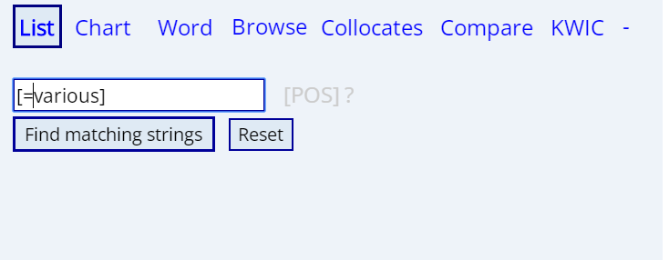

常用搜索选项
在这里，我们将会看到一些常见搜索选项，会结合具体搜索例子给大家展示一下搜索的结果。常用的选项就大概是：chart、list、collocate、compare和KWIC（key word in context)。
Word
选项搜索出来的结果主要是比较聚集的信息，一般包含后面的chart，list，collocate的信息。我们以smile为例：
出现的结果有以表格形式呈现的在各个语域出现的频率，词汇搭配，话题和相关的词汇等等。


Chart&list
将这两者放在一起主要是因为二者只是在搜索结果的呈现方式上略有差异。具体而言，chart选项可以看出单词、短语所使用的语域，比如是偏向于在学术领域还是小说中出现；以center为例来看一下：
结果是center在新闻中使用频率最高。

而list选项则可以搜素一个单词或短语出现的频率或者是这个词经常搭配什么样的词，我们以black为例，搜索经常与之搭配的名词；
可以看到black搭配的名词出现频率最高的是people。list还可以查同义词，如在白色方框中输入 [=various]，点击find matching string进行搜索。


我们得到的结果是，在various所有的近义词中，使用频率最高的是many。
Collocate
collocate选项主要查搭配，
以realzie为例，搜索经常和它进行搭配的副词有哪些，哪一些使用的频率更高。
这个下面带有阿拉伯数字1234的标志是进行限定的范围，相当于把realize放中间，来看他左右两边四个单词里面出现有哪些副词。
搜索结果如下图所示：

经常和realize搭配的副词是how。同样地，可以搜索其他的，如在和sunshine搭配的形容词中，谁出现的频率更高等等。
Compare
compare的主要作用是通过搭配来进行同义词辨析，也可以用来查搭配,
以区别identity和status为例，在word1输入identity在word2输入status，然后在collocate限定形容词，查修饰这二者的形容词有何不同，下面的数字选择在前面的一个形容词，
经过结果比较，我们可以看到在这个语料库中，mistaken修饰identuty的频率是368，而mistaken不修饰istatus……

同样地我们可以搜索logic和logical在修饰名词方面的不同。
ps.有时，搜索会出现错误，不要紧刷新返回点reset， 在搜索限度内继续搜索。
KWIC
KWIC是Key word in context的缩写，就相当于搜索单词或词汇出现的语境，以句子的形式呈现，它也有一个小横条，具体的用法和上面compare与collocate类似。
拿various举例：
图片上的意思为：把various放在语境中，看前面一个单词和后面有面第二个单词的情况，其中这个阿拉伯数字可以不断点击鼠标增加，可以按*键清零重设。

可以看到，various左边的一个单词和右边的第二个单词用方框标示出来，并且现实的句子还是有一定的长度。一般而言，颜色相同表示词性相同，如这里标黄的大都是副词。